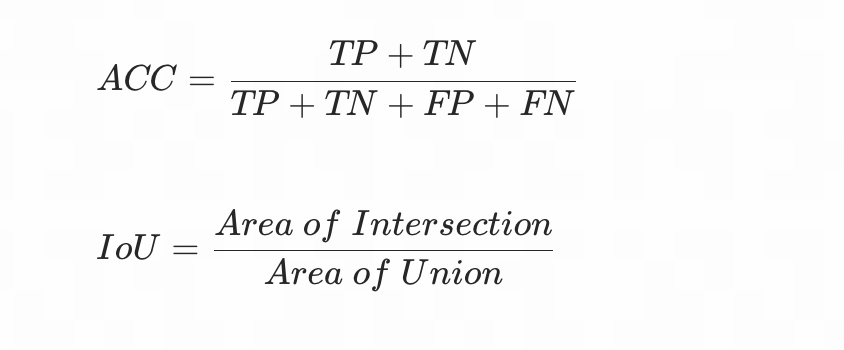
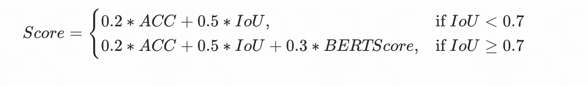
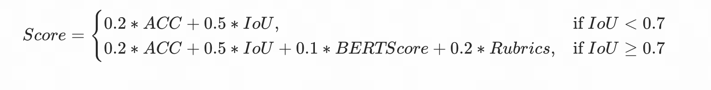
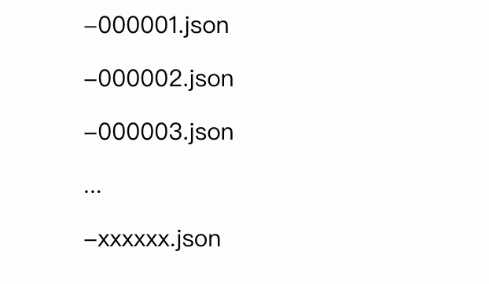
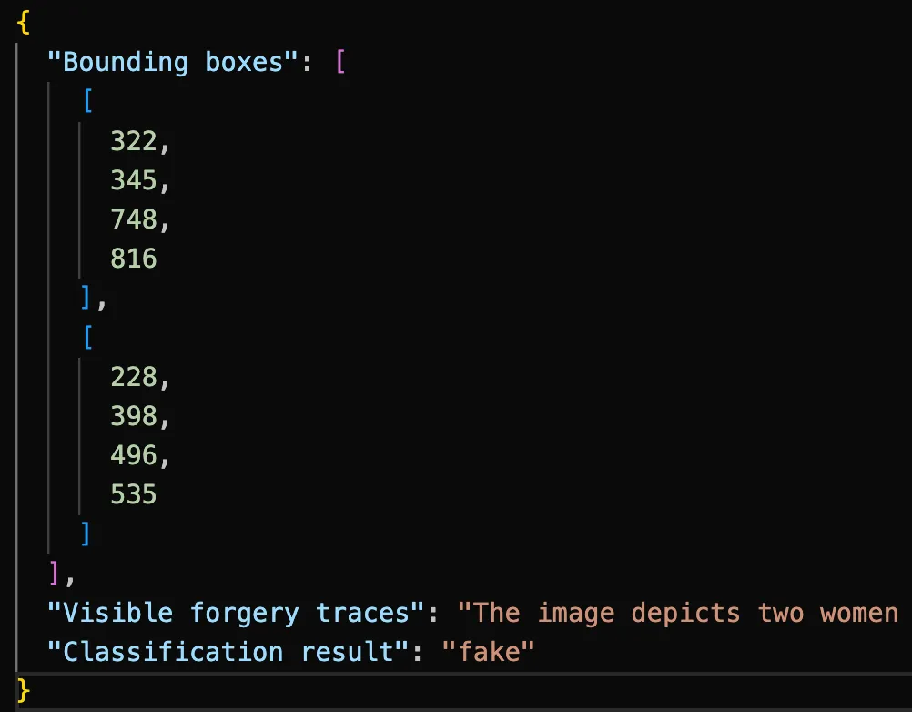
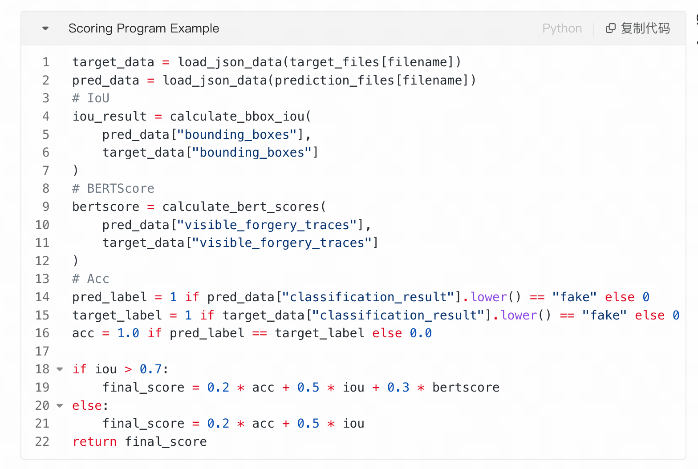
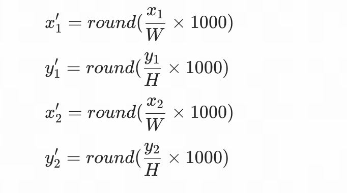

Competition website: https://www.codabench.org/competitions/15686/
Track 3 Overview
Deepfake realism has spurred numerous detection competitions, but most emphasize image-level classification, overlooking spatial localization and interpretable trace analysis. The localization of manipulated regions improves the explainability of decisions, and the increasing number of multimodal forgeries increases the risk.
We introduce the Deepfake Detection, Localization, and Explainability Challenge, supported by a large-scale multimodal deepfake description dataset (200K+ fake samples) that leverages Qwen3-VL to enrich the DDL-I corpus and advances spatial localization and explainability.
Train Phase
Participants will use images from our publicly available DDL-I dataset [2] for model training. It should be noted that DDLI does not provide interpretable text, which participants will need to construct themselves.
Test Phase
Phase 1: We will release a new test set covering forgery detection, localization, and explainable tasks. Participants will perform inference on the test set based on the model trained in Train Phase, upload results according to the specified format, and the platform will automatically start the evaluation and generate scores.
TimeLine: 5.15 - 5.31
Phase 2: We selected the top ten teams from the Codebench leaderboard to advance to the semi-finals, and used the best result submitted by each team for a Rubric score. (The scoring rules will be announced later.) We combined the Rubric scores with the Codabench leaderboard scores to determine the final ranking.
TimeLine: 6.1 - 6.8
Evaluation Metrics
- Detection: The metrics for this task is the ACC score.
- Localization: The metrics for this task is the IoU score.
- Explainability: The metrics for this task is the BERTScore [1] and Rubrics score (for Test phase2, released later).

The Codebench leaderboard score calculation formula is as follows:

The score of phase2 can be calculated by following:

Submission Format
- The model output should be a single confidence number of the input image being fake and the corresponding predicted manipulated mask. The expected submission format is like below:
The submitted folder format is like below:
json (folder)

The format of the JSON file can be referenced as follows:

Required fields:
- Bounding boxes: [xx, xx, xx, xx] (None for real images)
- Visible forgery traces: xxx.
- Classification result: fake (real for real images)

It is important to note that the detection task calculates the ACC metric for all images, the localization task calculates the IoU metric only for images where the ground truth is fake, and the interpretation text calculates BERTScore for all images.
Please also note that the bounding box coordinates given in the interpretability text are mapped to the [1-1000] range, following the standard adopted by most current MLLM.
Assume the original image has a width of W, a height of H, and original coordinates of (x₁, y₁, x₂, y₂), the mapped coordinates are calculated as follows:

Datasets
Our dataset has been open-sourced, related information about the dataset can be found on [2, 3].
Participants can use the image portions to train their models.
References
- [1] BERTScore: Evaluating Text Generation with BERT (https://arxiv.org/abs/1904.09675)
- [2] DDL: A Large-Scale Datasets for Deepfake Detection and Localization in Diversified Real-World Scenarios (https://arxiv.org/abs/2506.23292)
- [3] https://github.com/inclusionConf/DDL/blob/main/README.md